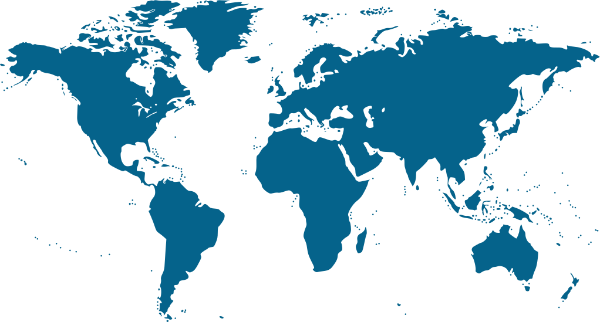

CBIT Venture Builder
A UK air-purifier maker grew with the Venture Builder, then joined a funded project in Thailand
In their words: In a testimonial, Healthy Air says the support “enabled us to enter four new countries”.
Making people and ventures AI‑native.
Part of CBIT, Nottingham Business School, Nottingham Trent University
Thailand
A national AI and entrepreneurship programme funded by Thailand’s Ministry of Higher Education, Science, Research and Innovation (MHESI) and delivered by CBIT and CMU STeP, founding sister centres under a five-year MoU.
AI for SME Conference
The annual AI for SME Conference, hosted by CBIT and supported by Innovate UK. ai4smes.co.uk

CBIT Venture Builder
In their words: In a testimonial, Healthy Air says the support “enabled us to enter four new countries”.
Global VB Partnership
In their words: “CBIT Venture Builder has accelerated OAK Network’s expansion in the UK market.” Oak Network, in a testimonial.
Interdisciplinary research bids
In the funder’s words: UKRI’s panel called it an “outstanding proposal which has very strong potential to result in key and transformative change”.
Start small
A keynote by Professor Xiao Ma, or a masterclass for leaders, teams or researchers, drawing on CBIT’s programmes: AI-powered business transformation, venture building, research commercialisation and interdisciplinary research.
Next event: Nottingham Global Entrepreneurship Week, November 2026. News and events
Professor Xiao Ma
60+
keynotes since 2023
Source: CBIT figures registry v1.1 (21 September 2026). Figures and sources
You contract with Nottingham Trent University (NTU). CBIT, the Centre for Business and Industry Transformation, is part of Nottingham Business School at NTU. NTU signs grants, contracts and agreements; CBIT delivers the work. The CBIT Venture Builder is CBIT’s programme for founders.
Start small: choose your door, or book a keynote or masterclass.